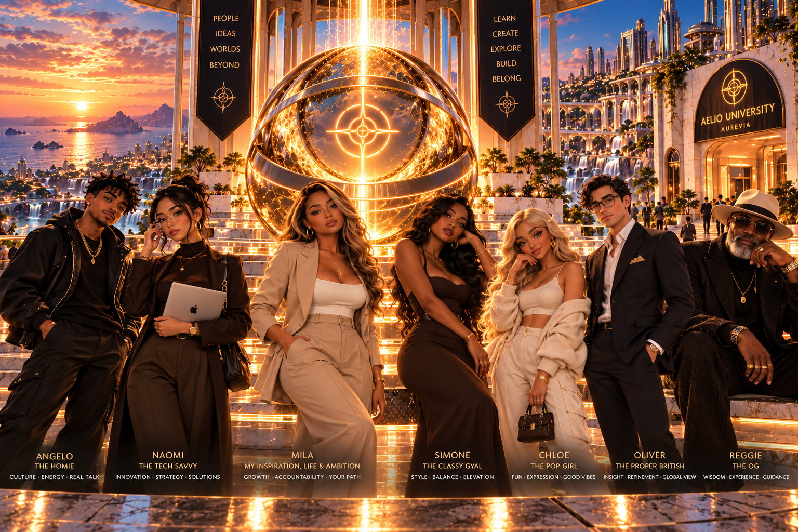
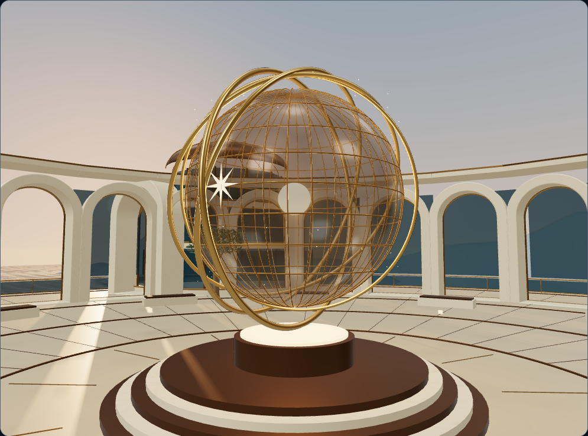
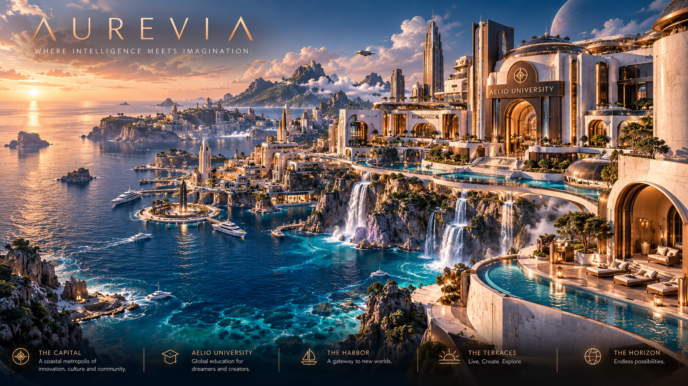

Approved Orb reference

Actual Orb render

Approved coastal direction

Actual plaza and coast

Left: supplied art direction. Right: actual WebGL renders. No generated illustration stands in for the scene. This iteration has not met an approved visual benchmark.



Remaining gaps: authored architectural/landscape assets, richer material/lighting detail, coastal complexity and production foliage. Other destinations have not been expanded.